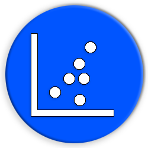

“A scatter plot is a type of plot or mathematical diagram using Cartesian coordinates to display values for typically two variables for a set of data. If the points are coded (color/shape/size), one additional variable can be displayed. The data are displayed as a collection of points, each having the value of one variable determining the position on the horizontal axis and the value of the other variable determining the position on the vertical axis.”
What?
One of the more simple but yet still very informative for correlation between variables we have the
Scatter
Plot.
This plot uses dots to represent values for two numeric variables. Unlike heat map (another plot to check
correlation), in this plot we observe relationships between variables.
Relationships between variables can be described in many ways: positive or negative, strong or weak, linear
or nonlinear.
Continuing with the basketball theme, in the plot above we have two variables:
- The average of team points a team scored in a season
- Year
But we can see one more thing - there are outliners! (what we can about them is a subject for a different post). This plot is useful for identifying other patterns in data, based on how closely sets of dots cluster together we can divide the them to groups, also it's possible to show gaps in the values if there are any.
Avoid from
Overplotting
When we have lots of dots to plot, this can run into the issue of overplotting. There a saying - "all covet all lose" - When your dataset is large, the dots of your scatterplot will tend to overlap, making the plot unreadable.

There are a few common ways to solve this problem:
- Decreasing dot size
- The easiest solution is reduce the dot size - the success in this is depend on the quantity of overlap you have. In combination with decreasing dot size, using transparency of the dots can also allows you to reveal patterns in the data.
- Sampling
- Sometimes less is more! try to plot some percentage of the data - choose wisely!
- Marginal distribution
- It's possible to add a plot, such a boxplot, a histogram or a density plot in the margins
- Try different plot
- Tried everything and more? Still need to find correlation between the variable and the scatter didn't help? don't be one trick pony - maybe heatmap or bubble chart might do the job
The Hidden Variable
Another subject to stay away from is jumping fast to conclusion. Just because we found a relationship between two variables in a scatter plot, it does not mean that changes in one variable are responsible for changes in the second. In statistics there a common saying that correlation does not imply causation. It's possible that there is a third variable that affect both, or, pure coincidence might cause an apparent correlation.
Extra Features
Trend Line
Trend Line (or Line of Best Fit) refers to a line through a scatter plot of data points that best expresses the relationship between those points. A straight line will result from a simple linear regression analysis of two or more independent variables. A regression involving multiple related variables can produce a curved line in some cases.
Third Variable
A common use in the scatter plot is adding a third variable. Adding this variable add information that can help us infer about the relations between the variables.
Annotations
An annotation is extra information associated with a particular point in a document or other piece of information. The scatter plot is highly customizable - it's possible to add text to dot, change the color, shape and etc. For example let's look the plot at the title:
The plot has two variables:
- The percent of three point (success / all shots)
- Total 3 point scored in a year
By adding text near the dot we can learn if the year affect about those 2 variable, information we can't learned from the scatter solely. I also added the player name and afterwars I can check the player furthermore.
Personal Take
So the big question after all is why to use scatter plot?
Scatterplots is an easy plot to use, he is one of the first plot that I used. Despite easy to use, it
doesn't mean that the plot won't be useful only to "beginners". The plot is highly customizable and can have
many often use cases. If you master this plot he can be a very powerful tool for data visualization.